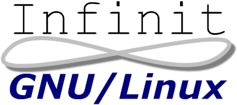

This page is no longer being updated. Please visit Aleph 0 Computing for information on current projects.
For about nine months in 2003 and 2004, I worked on a project to create a free, simple, complete, portable, self-building, CD-bootable distribution of GNU/Linux. It progressed to being quite usable as a server or desktop, but lacked a graphical user interface and more advanced programs. I expected to learn a lot about how a modern Unix-like system is constructed, and how to build one from source; that goal was met. I also hoped to replace all the operating systems currently running on my computers with a distribution I made; progress was increasingly slow, tedious, and lacked passion for several weeks. I have now stopped development.
As of 18 July 2004, The Infinit GNU/Linux project has come to an end. I have learned a great deal about Linux and its affiliated tools; that was the entire point of the project. The creation of a usable, standard, Unix-like operating system (even when all the heavy lifting has already been done) is an incredibly difficult task; the attempt, however, was still worthwhile.
I have begun using OpenBSD for the most critical tasks (server, laptop, etc.), and plan to use Slackware for Linux-dependent machines (should OpenBSD not satisfy the needs of, say, video editing or media center). I strongly encourage others who desire a free, simple, complete, portable, self-building, CD-bootable, Unix-like system to go whole hog and use UNIX, in the form of one of the BSDs. My OpenBSD page describes a bit more about this process.
Thanks to everyone who downloaded Infinit GNU/Linux; if you're still looking to do something similar yourself, I strongly encourage a look at Linux From Scratch and How To Build a Minimal Linux System from Source Code to get you started. In my opinion, simply following the directions won't teach you much, but reading plenty of documentation and performing lots of trial-and-error work will.

All information on this website (http://www.aleph0.com/), unless otherwise noted, is wholly the work of Christian Jones (chjones@aleph0.com). All information, data, and formatting is hereby released into the public domain, with no rights reserved. For questions, concerns, or comments, please email the author.